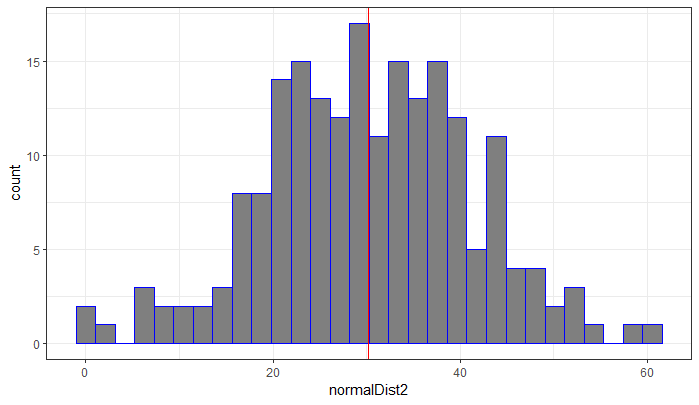

Matrices
Stacking and Mapping
The script for the lesson is here (right-click, save link as... -- put in scripts folder).
LansingJanTempsFixed.csv (just left-click -- put in data folder).
LansingJan2017Temps.csv (just left-click -- put in data folder)
We are going to start by opening the CSV file created in the last lesson, lansingJanTempsFixed.csv file, that contains temperatures in Fahrenheit for January 2011-2016:
lansJanTempsDF = read.csv(file = "data/lansingJanTempsFixed.csv");
Next, we are going to add January 2017 data from lansingJan2017Temps.csv. First, let's read the 2017 weather data into a data frame:
lansJanTemps2017DF = read.csv(file = "data/lansingJan2017Temps.csv");
lansJanTems2017DF is a data frame with one column (named x) -- x has 31 temperature values (in Fahrenheit), one for each day in January 2017. If we click on the arrow to the left of lansJanTemps2017DF in the Environment, it looks like this:
🞃 lansJanTemps2017DF 31 obs. of 1 variable
$ x: int 42 44 37 35 15 15 ...
Let's first change the column name from x to Jan2017:
colnames(lansJanTemps2017DF) = "Jan2017"; # there is only one column to name
And then bind the 2017 data to the 2011-2016 data frame using cbind(). We will save the binded data to a new data frame, lansJanTempDF2:
lansJanTempsDF2 = cbind(lansJanTempsDF, lansJanTemps2017DF);
cbind() stands for column bind and it will bind two data frames together by their columns. cbind() also will bind columns together between two matrices, or bind columns between a matrix and a data frame. The only caveat is that the columns need to be the same size. In this example, the columns all have 31 rows:
The January temperature matrix in Fahrenheit -- with 7 years of temperatures
You can also use cbind() to bind two vectors together -- as long as they are the same size. The result will be a matrix with two columns:
vectorA = 20:1; # 20 values 20, 19, 18, ..., 1
vectorB = seq(from=100, to =195, by=5); # 20 values: 100, 105, 110, ..., 195
matrixAB = cbind(vectorA, vectorB); # 2 columns with 20 values in each
or bind a vector to a data frame/matrix. Again, the only caveat is that the number of values in the vectors are the same as the number of rows in the data frame/matrix:
vectorC = seq(from=-20, to=18, by=2); # 20 values: -20, -18, ..., 18
matrixABC = cbind(matrixAB, vectorC); # 3 columns with 20 values in each
matrixABC contains three columns named vectorA, vectorB, and vectorC:
> matrixABC
vectorA vectorB vectorC
[1,] 20 100 -20
[2,] 19 105 -18
[3,] 18 110 -16
[4,] 17 115 -14
[5,] 16 120 -12
[6,] 15 125 -10
[7,] 14 130 -8
[8,] 13 135 -6
[9,] 12 140 -4
[10,] 11 145 -2
[11,] 10 150 0
[12,] 9 155 2
[13,] 8 160 4
[14,] 7 165 6
[15,] 6 170 8
[16,] 5 175 10
[17,] 4 180 12
[18,] 3 185 14
[19,] 2 190 16
[20,] 1 195 18
We are going to pick random values from our temperature data frame but, in programming there is no such thing as a truly random value. There has to be some calculation that determines the random number -- the calculations are just so complex that they seem random. As we will see later, these calculations can be manipulated (or, seeded) so you get the same "random" numbers every time you Source your script. This is very helpful when you are sharing and documenting your results.
For now, we are going to use unseeded calculations, which means that this part of the script will produce different results each time it is executed. The following line enforces the unseeded random calculations:
set.seed(seed=NULL); # remove seed value
We can use the sample() function to get a random sample from a set of observations. In our first example, the "observations" will just be a vector of values from 1 to 10: 1:10.
sample() has three arguments:
In the following code, the arguments for sample() are set so that:
randomSample1 = sample( 1:10, size=8, replace=TRUE);
randomSample2 = sample( 1:10, size=8, replace=FALSE);
In Fig.##, randomSample1 has two observations that were repeated 5 and 9), whereas randomSample2 has no repeated observations. Running the script again will produce different observations but randomSample2 will always have eight unique observations because replace=FALSE.
Note: you can get repeat values if replace=FALSE because there can be multiple observations with the same value -- you just cannot get repeat observations.

Random sampling of a vector with replacement and without replacement
You will get an error if the argument size is greater than the population size and replace=FALSE:
# randomSample3 = sample( c(1:10), size=12, replace=FALSE); # will cause error randomSample4 = sample( c(1:10), size=12, replace=TRUE); # will work
This is because you cannot take 12 unique samples from a population whose size is 10 (replace=FALSE), but you can take 12 samples from a population whose size is 10 (replace=TRUE) -- there will be at least two observations that are repeated. In this case, observations 2 and 3 are repeated twice, observation 6 is repeated 3 times, and observations 4, 5, and 7 were never picked:
> randomSample4
[1] 6 6 9 3 2 6 9 10 8 3 1 2
In the previous examples we were sampling values from a vector. A matrix is a two-dimensional vector so we can just as easily sample values from a matrix. Let's first convert the data frame lansJanTempsDF2 into a matrix:
lansJanTempsMat = as.matrix(x=lansJanTempsDF2);
And then randomly sample 80 values from the matrix:
randomTemps = sample(lansJanTempsMat, size=80, replace=TRUE);
The 80 samples will be different each time you Source your script...
> randomTemps
[1] 13 55 13 14 24 16 35 21 24 37 34 30 16 44 29 35 29 37 16 35 18 35 32 27 16
[26] 55 26 26 40 26 25 29 48 23 26 35 19 30 23 45 38 42 42 18 42 19 45 32 13 37
[51] 30 11 30 33 30 22 29 32 44 14 23 38 41 43 27 22 22 37 37 31 44 21 25 34 21
[76] 40 29 55 42 29
Every time your script is executed, a new "random" set of observations, called pseudo-random, is produced using a complex algorithm that seems random to humans. However, you often want to replicate your results meaning you want the same random values to occur each time you source the code.
To replicate your results (i.e., get the same "random" values), you use set.seed() and pass in a number:
set.seed(seed=12345);
The number is called the seed number -- the seed number sets the initial conditions for the algorithms that creates the pseudo-random numbers. This means that the pseudo-random number will be the same after the seed is set. If you change the seed number, then you get a different set of the same pseudo-random numbers.
If you want to learn more, there is a really good video on PBS Infinite Series about random number generators, pseudo-random number generators, and seed numbers. The discussion on seed numbers starts at 2:15.
We will take another 80 random samples from lansJanTempsMat allowing for repeats:
randomTempsSeeded = sample(x=lansJanTempsMat, size=80, replace=TRUE);
The 80 sampled values from the lansJanTempsMat matrix:
> randomTempsSeeded
[1] 38.0 23.0 29.0 25.0 30.0 34.0 23.0 19.0 13.0 44.0 34.0 32.0
[13] 29.0 31.0 19.0 44.0 16.0 55.0 32.0 19.0 29.0 27.0 23.0 25.0
[25] 26.0 15.0 44.0 29.0 35.0 32.0 32.0 43.0 19.0 25.0 29.0 55.0
[37] 29.0 48.0 17.0 32.0 2.1 34.0 27.0 21.0 26.0 44.0 53.0 39.0
[49] 32.0 29.0 16.0 26.0 30.0 43.0 29.0 35.0 27.0 42.0 32.0 41.0
[61] 32.0 47.0 15.0 56.0 26.0 25.0 38.0 17.0 25.0 27.0 32.0 27.0
[73] 14.0 29.0 32.0 25.0 13.0 32.0 35.0 21.0
And let's find the mean and standard deviation of the sample, which we will use later in the lesson:
meanRandom = mean(randomSampleSeeded);
sdRandom = sd(randomSampleSeeded);
meanRandom: 29.98875
sdRandom: 10.485...
Since the random values were seeded, randomSampleSeeded will be the same values every time you Source the script. If you change the seed number (from 12345 to anything else), then you will get another set of the same "random" values every time you Source your script.
For instance, if we change the seed number from 12345 to 54321 then you will get these values every time for randomTempsSeeded:
> randomTempsSeeded
[1] 38.0 23.0 29.0 25.0 30.0 34.0 23.0 19.0 13.0 44.0 34.0 32.0 29.0 31.0 19.0
[16] 44.0 16.0 55.0 32.0 19.0 29.0 27.0 23.0 25.0 26.0 15.0 44.0 29.0 35.0 32.0
[31] 32.0 43.0 19.0 25.0 29.0 55.0 29.0 48.0 17.0 32.0 2.1 34.0 27.0 21.0 26.0
[46] 44.0 53.0 39.0 32.0 29.0 16.0 26.0 30.0 43.0 29.0 35.0 27.0 42.0 32.0 41.0
[61] 32.0 47.0 15.0 56.0 26.0 25.0 38.0 17.0 25.0 27.0 32.0 27.0 14.0 29.0 32.0
[76] 25.0 13.0 32.0 35.0 21.0
When you sample from a matrix, sample() sees each value in the matrix as an observation.
When you sample from a data frame, sample() sees each column as an observation.
This means that sample() will choose random columns from a data frame -- not random values
If you try to sample 80 values from the data frame lansJanTempsDF2 without replacement:
> sample(lansJanTempsDF2, size=80, replace=FALSE)
You will get an error because there are only 7 columns in lansJanTempsDF2 and you are asking for 80 values without replacement.
If you try to sample 80 values from the data frame lansJanTempsDF2, with replacement:
> sample(lansJanTempsDF2, size=80, replace=TRUE)
You will get the original 7 columns randomly repeated 80 times.
A seed number is the input to a very complex formula that generates seemingly random number. Each time the formula executes (i.e., each time you ask R to pick a random number), a new number is generated that will be as the input for the complex formula the next time a random number is requested.
When you pick a seed number using set.seed(), you are generating a list of numbers that just looks random. When you choose a different seed number, you are generating a different list of consistent numbers that just look random.
When you set the seed to NULL, R still uses the same formula to generate "random" number, but it seeds the formula with another "random" number. You need to set the seed to NULL if you want different random numbers every time you execute your script.
The rules get more complicated if you pick random numbers without using set.seed() in your script -- you will get a situation in between setting seed to NULL and picking a seed number.
We can visualize the 80 sampled values using a histogram and add a vertical line to repreent the mean value.
The mean value, mean(randomTempsSeeded), is very close to 30.
> mean(randomTempsSeeded)
[1] 29.98875
The ggplot component that creates a histogram is geom_histogram and you only need to map the x value for a histogram (the y-axis in a histogram is the count). The vertical line is created using the component: geom_vline where x (xintercept) is set to the mean value:
#### Plot a histogram with the mean value
plot1 = ggplot() +
geom_histogram(mapping=aes(x=randomTempsSeeded),
fill="gray50",
color="blue") +
geom_vline(xintercept = mean(randomTempsSeeded),
color="red") +
theme_bw();
plot(plot1);
Note: in a geom_histogram (and many other plot objects in GGPlot), fill is the background color whereas color is the outline color.

Histogram of the 80 sampled values from the January temperature matrix
You will get this warning when plotting a histogram: `stat_bin()` using `bins = 30`. Pick better value with `binwidth`. This warning is kind of GGPlot bug -- GGPlot does not like it's own default of using 30 bins in a histogram. You can change it if you want, but there is no need.
sample() creates a random sample where each observation has the same chance of being picked (i.e., uniform probability). If we want to create a random set of observations that comes from a normal distribution with a specified mean and standard deviation, we use the function rnorm().
rnorm() has 3 arguments:
The following code samples 200 observations from a normal distribution with a mean of 20 and a standard deviation of 4:
normalDist1 = rnorm(n=200, mean=20, sd=2);
note: the sampled valued are weighted but they are still random
Looking at the first 20 random values, we can see their values are centered around 20:
> normalDist1[1:20]
[1] 19.99109 18.17063 21.53481 21.20402 20.78958 21.00338 23.53383
[8] 19.72381 18.93655 18.74356 22.54336 18.14803 17.84504 19.18242
[15] 16.70889 20.53722 23.31189 16.91820 19.35975 17.85754
We can also create a normal distribution using the mean and standard deviation from the sampled temperature values (fig ##):
normalDist2 = rnorm(n=200,
mean=mean(randomTempsSeeded),
sd=sd(randomTempsSeeded));
In the code above, we generated 200 temperature observations from a normal distribution based on the mean and standard deviation of lansJanTempsMat. The data generated are saved in the vector normalDist2.
Then we use a histogram to make a visual representation of normalTemp and, to the histogram, we add a vertical line at the mean value of the samples, mean(normalDist2):
plot2 = ggplot() +
geom_histogram(mapping=aes(x=normalDist2),
fill="gray50",
color="blue") +
geom_vline(xintercept = mean(normalDist2),
color="red") +
theme_bw();
plot(plot2);
The result is a histogram that looks like a bell diagram -- and would look more so if you increased the sample size.

Histogram of the normal distribution created using rnorm()
If you have any questions regarding this application, feel free to email them to the instructor here. You can attach the whole Project Folder as a zipped file.
A) In comments, answer the following:
sample(1:10, size=8, replace=TRUE)
B) Get 50 non-repeating samples from the even numbers between 100 and 999
C) Get 50 samples that can repeat from the odd numbers between 100 and 199
D) Using the row binding function rbind(), bind two more rows to lansJanTempsMat (this is sort of like adding a 32nd and 33rd day to January)
E) Using set.seed(seed=10) and rnorm():
> normExample
[1] 12.056239 11.447242 7.886008 10.202497 12.883635 13.169383 8.375771
[8] 10.908972 7.119982 11.230565 15.305339 14.267345 11.285299 14.962334
[15] 14.224170 12.268042 9.135168 11.414549 14.776564 13.448936
Save you script file as app2-08.r in the scripts folder of your RStudio Project for the class.
Answer the following in comments inside your application script: